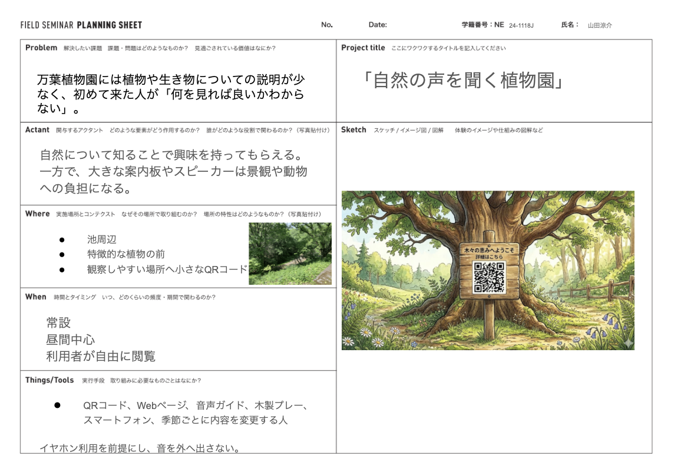

about me

山田 涼介
専修大学 ネットワーク情報学部
志望
Web制作やデジタル技術を活用し、 人と自然をつなぐサービス開発に関わりたい。
私はこんな人
日常の中にある不便や気づきをもとに、 技術を使って新しい体験を考えることに興味がある。 今回は万葉植物園を題材に、 QRコードと音声ガイドを用いた 「聞く植物園」を制作した。
中間発表会まで
作品のタイトルと概要
聞く植物園 ～QRコードがつなぐ、新しい自然との出会い～
万葉植物園にはさまざまな植物がある一方で、 植物や生き物についての説明が少なく、 初めて訪れた人が「何を見ればよいか分からない」 という課題があると考えた。
そこで、植物の近くに設置されたQRコードを スマートフォンで読み取ることで、 植物の特徴や豆知識を音声で聞ける 「聞く植物園」を提案した。
コンセプトは 「自然を主役にする技術」 である。スマートフォンの画面を見続けるのではなく、 音声を聞きながら実際の植物を観察してもらうことで、 自然への興味を深めることを目指した。
アクタントマップ

アクタントマップでは、来園者、植物、QRコード、 音声ガイド、スマートフォンなどの要素が、 どのように関わるかを整理した。
自然について知ることで来園者に興味を持ってもらえる一方、 大きな案内板やスピーカーを設置すると、 植物園の景観を損なったり、 動物への負担になったりする可能性がある。
そのため、小さなQRコード付き看板と 個人のスマートフォンを利用することで、 自然環境への影響を抑えながら、 植物について知ることができる仕組みを考えた。
中間発表会までのスケジュール
| 時期 | 行ったこと |
|---|---|
| 2026年4月8日 | オリエンテーションを受け、 万葉植物園の特徴や授業の目的を確認した。 |
| 2026年4月22日 | 植物園の課題を整理し、 アクタントマップを作成した。 |
| 2026年5月13日 | QRコードと音声ガイドを利用した 「聞く植物園」の企画を具体化した。 |
| 2026年5月27日 | 紙を使った試作と、 スマートフォンで表示する 植物紹介ページのプロトタイプを制作した。 |
| 2026年6月上旬 | HTML、CSS、JavaScriptを使い、 ウメ、サクラ、ハギの紹介ページを制作した。 |
| 2026年6月上旬 | GitHub PagesでWebページを公開し、 QRコードからアクセスできるか確認した。 |
| 2026年6月17日 | QRコード付き看板とポスターを展示し、 中間発表を行った。 |
中間発表会までに行った実験や作業
1．植物紹介Webページの制作
HTML、CSS、JavaScriptを使って、 植物の名前、特徴、開花時期、豆知識などを 表示するWebページを制作した。
音声ガイドの再生ボタンも実装し、 利用者が画面を見続けなくても、 植物について知ることができるようにした。
2．QRコード画像の作成と調整

植物紹介ページのURLをもとにQRコードを作成した。 QRコードは黒いドットと白い背景を使用し、 スマートフォンから読み取りやすい状態になるようにした。
また、印刷した場合でも読み取りやすくなるように、 画像の大きさや余白を調整し、 PNG形式で保存した。
3．GitHub PagesでのWebページ公開

制作した植物紹介ページを、 GitHubのリポジトリへアップロードした。 リポジトリにはトップページのほか、 ウメとサクラの紹介ページを保存した。
GitHub Pagesを利用してWebページを公開し、 パソコンだけではなく、 スマートフォンからもアクセスできる状態にした。
4．スマートフォンでの動作確認
作成したQRコードをスマートフォンで読み取り、 正しい植物紹介ページが表示されるか確認した。
また、ページの文字や写真が小さすぎないか、 音声ガイドが再生できるか、 QRコードからページが開くまでに 問題がないかを確認した。
5．QRコード付き木製看板の試作
植物園の自然な景観になじむように、 木材を利用したQRコード付き看板を制作した。
実際に植物の近くへ設置することを想定し、 QRコードが見つけやすく、 スマートフォンで読み取りやすい位置になるように 看板の形や高さを検討した。
中間発表会の成果物

中間発表会では、聞く植物園の企画を説明するポスター、 QRコード付き木製看板、 植物紹介Webページ、 スマートフォンによる体験デモを展示した。
- 企画のコンセプトを説明するポスター
- 植物紹介ページにつながるQRコード
- 梅をイメージしたQRコード付き木製看板
- ウメ、サクラ、ハギの植物紹介Webページ
- 音声ガイド機能
- スマートフォンによる体験デモ
発表では、実際にQRコードを読み取り、 植物紹介ページを開いて音声ガイドを聞く流れを 体験してもらった。
発表を見た人からは、 「QRコードから音声を聞ける点が分かりやすい」 「音声ガイドという特徴をさらに深めるとよい」 「看板を植物の形にすると面白い」 などの意見を得ることができた。
最終発表会まで
中間発表で得たフィードバック
中間発表では、QRコードから音声を聞ける点が 分かりやすいという評価を得た。 一方で、音声ガイドならではの特徴を さらに深めた方がよいという意見も得た。
また、看板を植物の葉や花の形にすると面白いという提案があり、 Webページだけではなく、 実際に植物園へ設置する看板の形や素材についても改善した。
Webページの改善
中間発表時の植物紹介ページは、 植物の基本的な説明と音声読み上げを中心とした シンプルな構成だった。
最終発表に向けて、植物の写真を大きく表示し、 学名、科名、開花時期、特徴、豆知識、注意点などを 項目ごとに整理した。 また、スマートフォンでも読みやすいように、 文字の大きさやレイアウトを調整した。
藤の花のページ制作
完成版の植物紹介ページとして、 藤の花を紹介するWebページを新たに制作した。
実際に撮影した藤の写真を大きく使用し、 藤の特徴、学名、科名、開花時期、豆知識、 注意点などを掲載した。 また、再生ボタンを押すことで、 藤についての説明を音声で聞けるようにした。
QRコード付き看板の改善
植物園の景観になじむように、 木材を使った縦長のQRコード付き看板を制作した。
屋外で使用することを考え、 QRコードが雨や汚れで傷まないようにする方法や、 植物の観察を妨げずに読み取りやすい設置位置についても 検討した。
完成版
完成した成果物
完成版では、木製のQRコード付き看板と、 植物の情報を写真や音声で紹介するWebページを制作した。
利用者が看板のQRコードをスマートフォンで読み取ると、 植物紹介ページが開き、 実際の植物を見ながら説明を聞くことができる。
藤の花のWebページ
藤の花のページでは、 実際に撮影した写真を大きく使用し、 藤の基本情報、特徴、豆知識、注意点を掲載した。
音声ガイドの再生ボタンを押すと、 藤についての説明が日本語で読み上げられる。
利用の流れ
- 植物の近くに設置されたQRコード付き看板を見つける。
- スマートフォンのカメラでQRコードを読み取る。
- 植物紹介ページを開く。
- 音声ガイドの再生ボタンを押す。
- 音声を聞きながら、実際の植物を観察する。
工夫した点
最も工夫した点は、 スマートフォンの画面だけを見る体験にしなかったことである。
音声で説明を聞けるようにすることで、 利用者が画面から目を離し、 実際の植物の形や色などを観察できるようにした。
また、木製看板や落ち着いた色のWebデザインを利用し、 植物園の自然な景観を邪魔しないようにした。 QRコードやWebページは主役ではなく、 植物を観察するための補助になることを意識した。
制作を通して学んだこと
今回の制作を通して、 Webページを作る技術だけではなく、 屋外で使用する場合の耐久性、 看板の高さや読みやすさ、 QRコードを読み取るまでの利用者の動きなども 考える必要があると学んだ。
また、中間発表で得た意見をもとに改善することで、 自分だけでは気づかなかった問題や可能性を 発見できることを実感した。
今後の展望
今後は、藤だけでなく、 ウメ、サクラ、ハギなど、 紹介する植物の種類をさらに増やしたい。
また、短い音声と詳しい音声を選べる機能、 英語などの多言語対応、 QRコードの読み取り回数の記録、 利用後のアンケート機能などを追加したい。